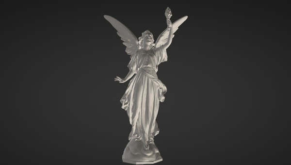

Dense scans keep up new in 0.11.1
Dense scans with micro levels keep up with the pen, and one-click updates on Windows and Linux.
- Dense scans, fast
The free, open-source sculpting app
Digital sculpting for VFX, animation and game studios on Linux, macOS and Windows, with a the Classic sculpting keys (and Blender and Maya styles) for artists switching over, and no subscription. It ships VFX Reference Platform builds, OpenUSD and a Python API for studio pipelines, one-click game-ready LODs and Send to Unreal, plus free built-in AI: describe a brush and Brush Lab builds it, or turn a sketch or a sentence into a model you can sculpt.
Sculpting for VFX, animation and games, with the Classic sculpting keys available, VFX Reference Platform builds, OpenUSD and Python, plus free built-in AI: an AI brush creator and sketch to 3D.
New to sculpting? Make your first sculpt in 10 minutes →
New in 0.11.1: Dense scans with micro levels keep up with the pen, and one-click updates on Windows and Linux. Everything that changed · changelog

Dense scans with micro levels keep up with the pen, and one-click updates on Windows and Linux.
Sixty new brushes in six packs, a Masking panel, a quick tour for experienced sculptors, and experimental options for very dense meshes.
Voxel Remesh 3-4x faster, high-DPI laptops that fit the screen, the right tray in every look, and a Preview channel for betas.
A focused sculpting app that starts instantly, works offline and fits straight into VFX, animation and game pipelines.
Fourteen brushes including Clay Block, Sharp Crease, Tendril, Trim and Move, with alphas, Lazy Stroke, symmetry, tablet pressure, classic, Blender and Maya-style navigation, subdivision and voxel remesh.
Hold Ctrl to paint a mask or drag a lasso or rectangle, mask by cavity, and grow, shrink or blur it. Auto-group by angle or by piece, then Ctrl+Shift+click to isolate a group and work on just that part.
Keep the body, eyes, teeth and armour as separate meshes. Append, split, merge and solo them, Alt+click to pick one, and export each as its own object to glTF, FBX, USD or through the Bridge.
Paint colour straight onto the sculpt in layers with blend modes, tint the cavities, and judge forms under the Sculpt, Red Wax, Clay, Skin, Bronze, Chrome or White materials, or load your own material capture (lit sphere) images and keep them in folders.
Keep Blender for the scene and sculpt here: the free add-on sends the selected objects to SculptForge in one click, and one click sends them back into the same objects, with transforms, materials and modifiers kept. Get the add-on · how it works
Exchange models with another sculpting app through the Bridge, with face groups, masks, UVs and vertex paint, on Windows and macOS. Project files keep everything, with autosave and crash recovery.
"Dry cracked mud." "Overlapping dragon scales." An AI turns words into a brush you can tweak with sliders. Share it with a brush code, a studio folder or the community gallery.
Reconstruct a full, sculptable model from a sketch, a piece of concept art or a description, for free through Hunyuan3D, TRELLIS.2 and Stable Fast 3D on Hugging Face, on your own ComfyUI, or with fal.ai or Meshy.
Sculpt layers become blend shapes and morph targets, and a whole LOD chain is one click. Export FBX, glTF, OpenUSD, OBJ and PLY, checked with the Khronos and OpenUSD validators.
One click imports or updates your asset in a running Unreal Editor, on this computer or another one on your network. Static meshes come with LODs, skeletal meshes with morph targets.
Load phone captures as a sculpting reference, turn them into watertight meshes, or turn your sculpt into splats. Supports PLY, .splat, glTF KHR_gaussian_splatting and OpenUSD.
Run any ComfyUI workflow on your own GPU or studio server to generate models straight into SculptForge, and use SculptForge's remesh, LOD and USD/FBX export nodes inside ComfyUI graphs.
sculptforge-cli runs any operation headless for build farms. Its built-in MCP server
lets Claude Code, Claude Desktop or any MCP client sculpt, convert and export.
VFX Reference Platform CY2026 · CY2027
SculptForge follows the VFX Reference Platform and is built and tested in its reference environments on every commit. There's no licence server, no seats and no accounts, and every editor action is scriptable from Python or the command line.
import sculptforge with NumPy mesh accessUSDA and USDZ, with each Part as its own Mesh prim and sculpt layers as UsdSkel blend shapes.
Exports are checked with OpenUSD's usdchecker.
rez-build --install puts the app and CLI on PATH and the Python module on
PYTHONPATH.
sculptforge-cli runs every operation without a display: remesh, decimate, LODs, USD, FBX
and glTF export. Turntables and review images render offscreen.
No Qt, Boost, TBB or OpenEXR to clash with the versions your other tools load. The few dependencies are linked statically.
No XWayland: a native Wayland window, sharp at any scale (fractional too), with pen pressure through the Wayland tablet protocol. X11 works just as well.
No licence server, telemetry or account. It runs on air-gapped workstations and farm nodes.
GPL-3.0: fork it and wire it into your asset system. In-house changes can stay in-house; you only share source if you distribute a modified version outside your organisation.
# Python 3.13, inside your pipeline
import sculptforge as sf
doc = sf.Document()
sf.run(doc, "open", path="/show/troll/troll_base.fbx")
sf.run(doc, "remesh", resolution=320)
sf.run(doc, "export_usd", path="/show/troll/troll_sculpt.usda")
verts = doc.vertices # NumPy (N, 3) float32# Deploy with Rez, run anywhere on the farm
rez-build --install
rez-env sculptforge -- sculptforge-cli -c \
'open path=troll.fbx; export_lods path=troll.glb levels=4'
rez-env sculptforge -- sculptforge troll.usda \
--render review.png --turntable 8Every clip is a real, unedited recording of the app, made with its built-in demo recorder. Waits for AI models are sped up and labelled on screen.
Type "dry cracked mud", and AI designs the brush. Then ask for "deeper cracks, sharper edges". It's free out of the box with no key. This clip uses a small open model running on the same machine, so nothing leaves the computer.
One concept sketch became a full 3D owl knight, with shields, belt and pouches, a back and real depth. It was made with the free Hunyuan3D 2.1 model, then voxel-remeshed into one clean surface ready to sculpt. The wait is sped up in the clip and labelled. You can also type a description instead of using an image.
Sculpt a snarl on its own layer and play it back. Generate a LOD chain in one click: even the 5,000-triangle level keeps the expression. Then send a skeletal mesh with LODs and morph targets straight to Unreal Engine.
Turn a sculpt into Gaussian splats for web viewers and engines, and turn splat captures into watertight meshes in under a second.
Two AI tools work out of the box at no cost and with no sign-up. Every AI feature is optional and talks directly to the service you pick. SculptForge has no servers, no account and no telemetry.
Your art is never uploaded or used for training. AI features run only when you use them and can be turned off (Preferences > AI).
Each model has its own licence. For example, Tencent's Hunyuan3D isn't licensed for use in the EU, UK or South Korea. See the AI services and privacy guide.
SculptForge is young: UDIMs, Ptex and separate texture channels aren't there yet. See the roadmap.
Version 0.11.1. All builds come from the latest GitHub release, with SHA-256 checksums. Free forever; membership adds betas and early builds, Member Requests, a roadmap vote and credits.
makepkg -si
VFX Reference PlatformCY2026 (Rocky 8) & CY2027 (Rocky 9) · .tar.gz with Python module
Rezpackaging/rez · build and install your own package
Each button downloads the newest version.
All downloads
(ARM64, portable .zip, one-command install) · on macOS also
brew install --cask islandmed/tap/sculptforge ·
older versions.
The builds aren't code-signed yet. On macOS, right-click the app and choose Open the first time. On Windows, if SmartScreen appears, choose More info → Run anyway. You can also build from source.
Yes. SculptForge is free under the GPL-3.0, and you own everything you sculpt with it. The GPL covers the program's source code, not your models. If you use an AI model to generate a starting point, that model's licence also applies (see the AI services guide).
No. Sculpting, layers, LODs, remeshing, file formats and Send to Unreal all work offline with no AI at all. The AI tools are extras you can switch to a local model or simply ignore.
It targets Unreal Engine 5. It uses Unreal's built-in Python remote execution, so you only enable the Python plugin and tick "Enable Remote Execution"; there's nothing to install in your project. You can always export an Unreal-ready FBX instead.
Mostly, yes. Blocking out, sculpting forms and detail, blend shapes, LODs and getting assets into Unreal, glTF or USD all work today, with familiar brushes and controls. Masking, face groups and hide/show, vertex paint, lit spheres, project files, subdivision levels, dynamic topology, Quad Remesh retopology with guides, UVs and vector displacement brushes are in too. Pick Classic sculpting keys at the first start, and bring models over as OBJ, FBX, glTF or USD, or through the Bridge.
Yes. Every release includes VFX Reference Platform CY2026 and CY2027 builds (Rocky Linux 8 and 9, GCC
14.2, Python 3.13), there's a Rez package, and everything the app does can be scripted from Python or the
headless CLI. It reads and writes OpenUSD (USDA/USDZ), FBX and glTF. Binary .usdc, USD
references and OpenColorIO aren't supported yet. See the
studio guide.
Try it, report bugs, share brushes, and send pull requests. See CONTRIBUTING.md.